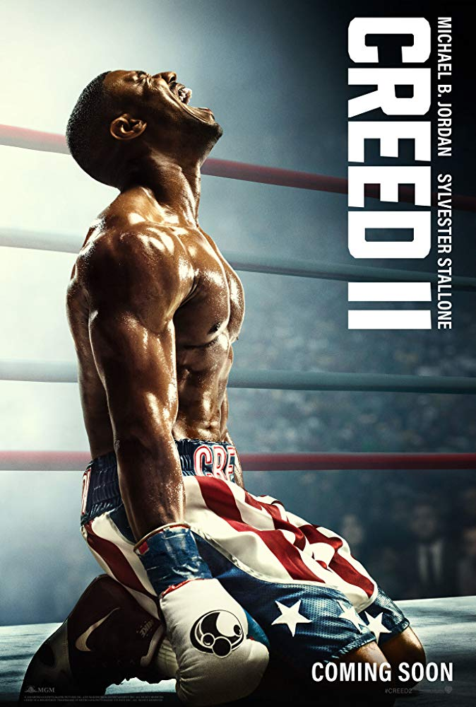
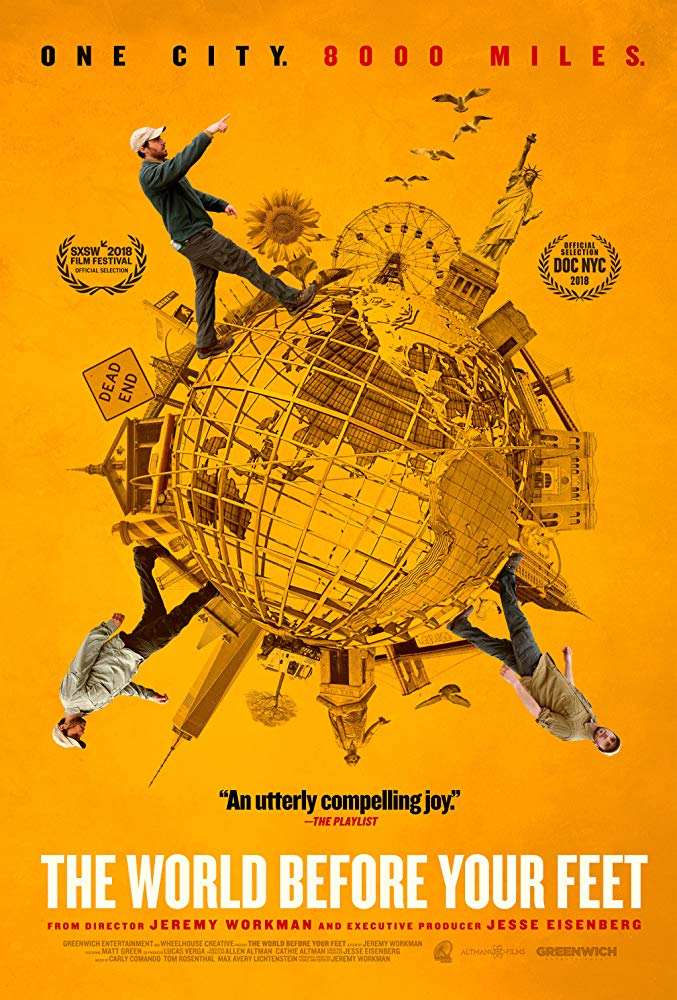

Creed 2

- Genre : Drama , Sport
- Release date : 17 January 2019 (Russia)
- Language : English
- Country of Origin : USA
Some description about movie :
Creed II is a 2018 American sports drama film directed by Steven Caple Jr., and written by Sylvester Stallone and Juel Taylor. A sequel to Creed (2015) and the eighth installment in the Rocky film series, it stars Michael B. Jordan, Sylvester Stallone, Tessa Thompson, Dolph Lundgren, Wood Harris, Russell Hornsby, Andre Ward, and Phylicia Rashad. Creed writer-director Ryan Coogler serves as an executive producer on the film. The film follows Adonis Creed training in order to defeat the son of Ivan Drago, the powerful athlete who killed his father in the ring more than 33 years prior.
A Creed sequel was confirmed in January 2016, although due to both Coogler and Jordan's involvement in Black Panther, the film was delayed, with Coogler ultimately being replaced by Caple. Stallone completed the script in July 2017 and announced Lundgren would be reprising his role as Drago, and filming began in Philadelphia in March 2018, lasting through July.
Creed II is scheduled to be released in the United States by Metro-Goldwyn-Mayer on November 21, 2018, and internationally by Warner Bros. Pictures. The film received positive reviews from critics, who praised its direction and performances, especially those of Jordan, Thompson, and Stallone
Hunter Killer

- Genre : Action , Thriller
- Release date : 18 November 2018 (Russia)
- Language : English
- Country of Origin : UK , USA , China
Some description about movie :
Hunter Killer is a 2018 American action thriller film directed by Donovan Marsh, written by Arne Schmidt and Jamie Moss, and based on the 2012 novel Firing Point by Don Keith and George Wallace. The film stars Gerard Butler, Gary Oldman, Michael Nyqvist (in one of his final film roles), Common, Linda Cardellini and Toby Stephens, and follows a group of Navy SEALs who rescue the captured Russian President from a coup.
Hunter Killer was released in the United States on October 26, 2018, by Summit Entertainment. It has grossed $29 million worldwide and received mixed reviews from critics, who saw it as "an undemanding, by-the-numbers actioner".
The world Before Your Feet

- Genre : Documentary
- Release date : 21 November 2018
- Language : English
- Country of Origin : USA
Some description about movie :
There are 8,000 miles of roads and paths in New York City and for the past six years Matt Green has been walking them all - every street, park, cemetery, beach, and bridge. It's a five-borough journey that stretches from the barbershops of the Bronx to the forests of Staten Island, from the Statue of Liberty to Times Square, with Matt amassing a surprisingly detailed knowledge of New York's history and people along the way. Something of a modern-day Thoreau, Matt gave up his former engineering job, his apartment, and most of his possessions, sustaining his endeavor through couch-surfing, cat-sitting and a $15-per-day budget.
Robin Hood

- Genre : Action, Adventure , Thriller
- Release date : 29 November 2018
- Language : English
- Country of Origin : USA
Some description about movie :
Robin of Loxley (Taron Egerton) a war-hardened Crusader and his Moorish commander (Jamie Foxx) mount an audacious revolt against the corrupt English crown in a thrilling action-adventure packed with gritty battlefield exploits, mind-blowing fight choreography, and a timeless romance.
HOME